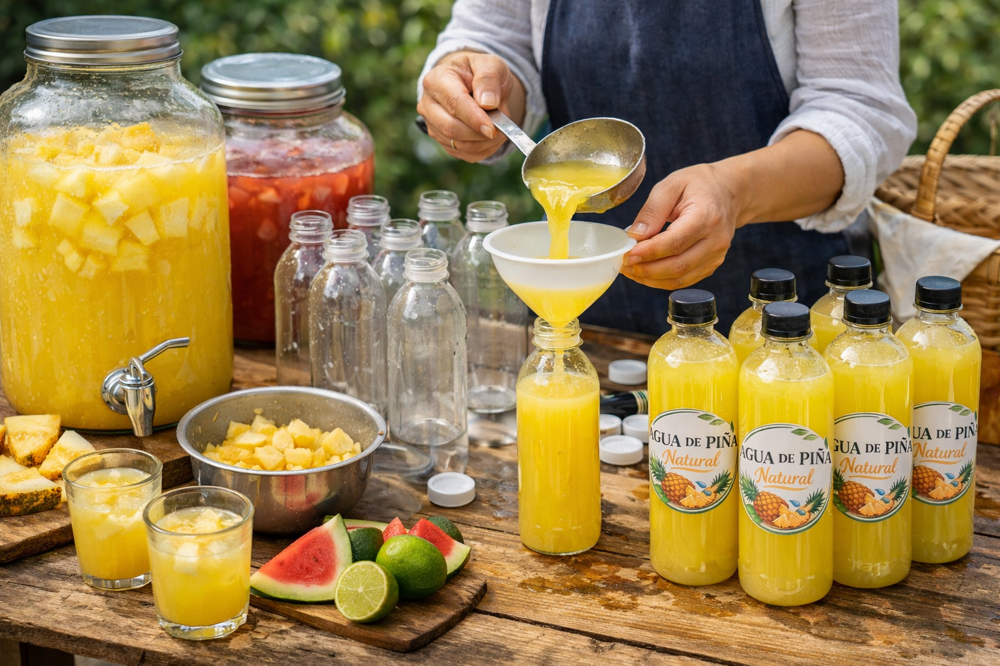

Todo comenzó en la cocina de la abuela, donde el aroma de la fruta fresca recién cortada llenaba el aire. En días calurosos, preparar aguas frescas no era solo una costumbre, era una forma de reunir a la familia alrededor de algo sencillo pero especial.
Con el tiempo, esas recetas caseras de jamaica, horchata y frutas de temporada— empezaron a llamar la atención de vecinos y amigos, quienes siempre preguntaban si podían llevar un poco más a casa. Lo que inició como un gesto de cariño pronto se convirtió en una oportunidad.

Cada botella seguía preparándose con el mismo cuidado y dedicación que en la cocina de la abuela.
Hoy, ese pequeño esfuerzo se ha transformado en un negocio familiar que crece con orgullo, llevando a más personas el sabor auténtico de México. Más que vender bebidas, compartimos tradición, frescura y el valor de lo hecho en casa.